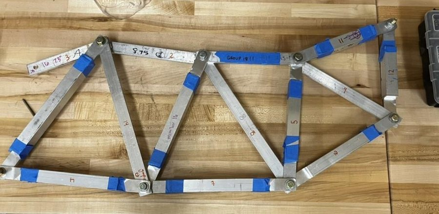
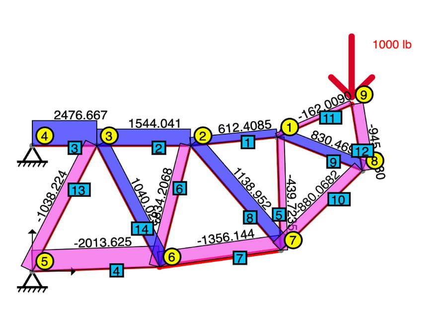
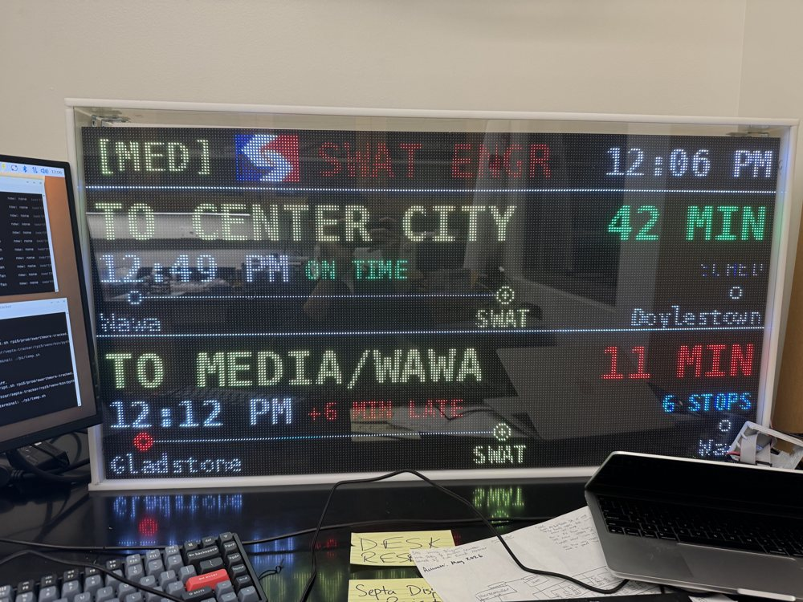
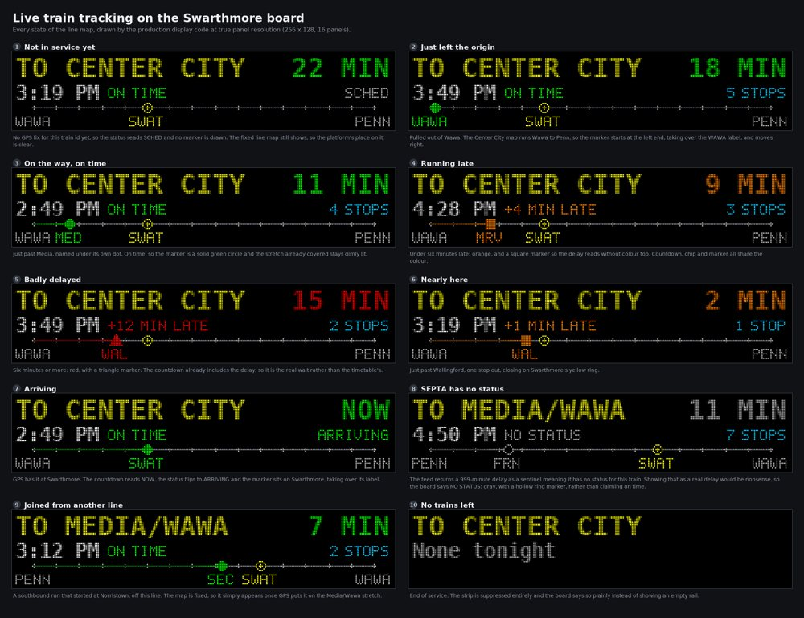

Autonomous Blimp Drone
Aerial Swarms Lab, Lehigh University · May – Aug 2026
codepaper
Designed and 3D-printed a custom frame integrating an ESP32 microcontroller and IMU at a 29 g total
system weight, iterating over 10+ builds. Wrote a pure-pursuit and PD controller in C that cut post-push
position error 67% (1.27 to 0.42 m) and returned the blimp to within 1.5 m of target in 95% of
motion-capture trials, with a 13.2 s median recovery. Second author on
HINT-Blimp, presented at IROS 2026.


hover
Cantilever Truss: Design, Build, and Load Test
Swarthmore College, ENGR 006 · April 2026
Designed, machined, and load-tested a 6.45 lb aluminum cantilever truss that carried a 1,000 lb
point load. Traced a 3x deflection error (0.12 in predicted, 0.39 in measured) to joint misalignment,
not member sizing.
Nine-Key Macropad, Custom PCB
Independent project · May 2026
code & PCB
Designed the schematic and PCB in KiCad for a 9-key macropad, hand-soldered it, and flashed custom
KMK firmware.
Fingertip Attachment for a Haptic Research Device
Professor Towles' Biomechanics Lab, Swarthmore College · 2025 – present
code
The stock PHANToM end effector forces a whole-hand grip. I'm designing and printing a fingertip
attachment for single-finger testing, and building 7 interactive 3D haptic apps in C++ on the OpenHaptics
SDK, increasing the data capture rate 5,000x.


hover
SEPTA Station Departure Board
Independent project · May 2026 – present
code
Took over a 16-panel HUB75 LED departure board (Raspberry Pi 5, 5 V / 100 A supply) that had been left
as a rough senior design prototype. I rebuilt the Python display layer around live train positions from
SEPTA's TrainView GPS feed, and I'm redesigning the enclosure for weatherproof mounting while
coordinating a station installation with SEPTA.
F1TENTH Autonomous Racing Car
Swarthmore Robotics Club, President · 2026 – present
F1TENTH
Leading an 8-person team building a 1/10-scale autonomous race car, integrating LiDAR-based SLAM with the ROS
navigation stack.